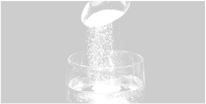
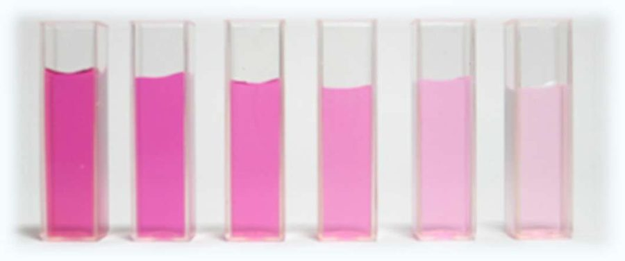

Les solutions aqueuses
Ce chapitre sera débloqué en fin de séquence, au rythme de la classe. Le code de déblocage est transmis via le cahier de textes — il figure aussi en bas de ta fiche de cours.
Sommaire du chapitre
Physique-Chimie · Seconde · Thème 1 — Constitution et transformations de la matière
Les solutions aqueuses
Thème 1 · Chapitre 5 — cours & exercices corrigés
01 Définitions
Une solution est un mélange homogène obtenu en dissolvant une substance (solide, liquide ou gazeuse) dans un liquide. Ex : lotion pour le visage, eau salée, soda, etc.
- La substance dissoute est le soluté ;
- Le liquide dans lequel s'effectue la dissolution est le solvant ;
- La solution, c'est l'ensemble soluté + solvant.
Image 1 — Lorsqu'on ajoute un soluté dans l'eau, les molécules d'eau doivent se réarranger afin d'établir des interactions avec les particules de soluté.
C'est grâce à la formation de ces interactions que la dissolution des particules de soluté dans l'eau est possible.
Lorsque le soluté est complètement dissous, les molécules d'eau entourent les particules de soluté.
Schéma redessiné d'après l'illustration de la source — auteurs : France Payment, Chantal Secours, Anouk Noël.
Une solution est dite aqueuse si le solvant est de l'eau.
Associer les composés aux termes définis dans le cours.
Sel (NaCl) · Eau (H2O) · Eau salée (H2O, Na+ + Cl−)
Voir la correction
Sel (NaCl) : soluté
Eau (H2O) : solvant
Eau salée (H2O, Na+ + Cl−) : solution
02 Concentration en masse
Une même quantité d'eau peut contenir peu ou beaucoup de soluté. Il faut une grandeur pour le dire.
La concentration en masse cm (aussi appelée concentration massique) est une grandeur reflétant la proportion d'un soluté dans une solution aqueuse.
msoluté masse de soluté introduite · g
V volume de solution · L
Calculer la concentration massique d'une solution de 500 mL dans laquelle sont dissous 25 g de chlorure de sodium.

Voir la correction
cm = msolutéV
V = 500 mL = 0,500 L · msoluté = 25 g
cm = 250,500 = 50 g.L−1
Quelle masse de sulfate de cuivre anhydre faut-il peser pour préparer une solution de sulfate de cuivre de 100 mL concentrée à 2 g/L ?
Voir la correction
cm = msolutéV ⇔ msoluté = cm × V
V = 100 mL = 0,100 L · cm = 2,0 g.L−1
msoluté = 2,0 × 0,100 = 0,20 g = 200 mg
03 Préparation d'une solution
Calculer une concentration ne suffit pas : au laboratoire, il faut savoir fabriquer la solution.
Il existe deux méthodes pour préparer une solution aqueuse :
- par dissolution ;
- par dilution.
A — Dissolution
Une dissolution est l'action de dissoudre une certaine masse de soluté dans un certain volume de solvant. Le soluté est dispersé dans le solvant, les deux formant un mélange homogène.
- Peser le soluté en le déposant dans une coupelle.
- Verser le soluté dans une fiole à l'aide d'un entonnoir.
- Ajouter de l'eau distillée aux 23 de la fiole environ, puis agiter la fiole pour dissoudre totalement le soluté.
- Compléter avec de l'eau distillée jusqu'au trait de jauge (attention au ménisque).
B — Dilution
Autre point de départ : une solution existe déjà, trop concentrée. On la dilue.
Lors d'une dilution, la solution est préparée par ajout d'eau distillée à une autre solution aqueuse. La solution utilisée pour la préparation est qualifiée de solution mère, tandis que la solution préparée est qualifiée de solution fille.
La conservation de la masse de soluté avant (m0) et après (mf) la dilution implique la relation suivante :
m0 = mf ⇔ cm0 × V0 = cmf × Vf
cmf concentration de la solution fille · g.L−1
V0 volume de la solution mère · L
Vf volume de la solution fille · L
- Prélever un volume de solution mère avec une pipette jaugée.
- Verser ce volume dans une fiole jaugée d'un volume égal à celui de la solution fille désirée.
- Compléter avec de l'eau distillée jusqu'au trait de jauge (attention au ménisque).
On appelle facteur de dilution le rapport :
cm0 concentration massique de la solution mère · g.L−1
cmf concentration massique de la solution fille · g.L−1
On dilue 100 mL d'une solution mère de concentration c1 = 25,8 g.L−1 dans une fiole jaugée de 250 mL. Quelle est la concentration de la solution obtenue ?
En déduire le facteur de dilution.
Voir la correction
cm0 × V0 = cmf × Vf
Or ici,
c1 × V0 = cmf × Vf ⇔ cmf = c1 × V0Vf
cmf = 25,8 × 0,1000,250 = 10,32 ≈ 10,3 g.L−1
F = cm0cmf = c1cmf
F = 25,810,32 = 2,5
Quelle est la concentration d'une solution fille issue de la dilution, avec F = 5, d'une solution mère de concentration 50,0 g/L ?
Voir la correction
F = cm0cmf ⇔ cmf = cm0F
cmf = 50,05 = 10,0 g.L−1
04 Dosage par étalonnage
Jusqu'ici, on connaissait la concentration et l'on préparait la solution. Voici le problème inverse.
Doser une espèce chimique dans une solution consiste à déterminer la concentration de l'espèce inconnue.
En première approche, pour une solution colorée, on peut réaliser une échelle de teinte qui permettra d'encadrer la concentration de la solution à doser.

Trouver un encadrement de la concentration de l'espèce rose dans la solution.
Voir la correction
0,04 g.L−1 < cm < 0,08 g.L−1
Le dosage par étalonnage consiste à comparer une propriété physique de la solution dont on veut déterminer la concentration à la même propriété physique pour une gamme d'étalons, c'est-à-dire de solutions de référence dont on connaît les concentrations.
Grâce à cette propriété physique, on peut construire une courbe d'étalonnage permettant de déterminer graphiquement la concentration recherchée.
| concentration massique (g.L−1) | 10 | 20 | 30 | 40 | 50 | 60 |
|---|---|---|---|---|---|---|
| masse volumique (g.L−1) | 1001 | 1005 | 1008 | 1011 | 1014 | 1017 |
Quelle est la concentration massique d'une solution de masse volumique ρinc = 1,05 g/mL ?
Voir la correction
cm = 140 g.L−1
✓ Pour le DS, je sais :
- 01 · diapo 1 · man. 5 p.48 · 6 p.48
- 02 · diapo 2 · man. 29 p.52
- 03 · diapos 2 · 4 · 5 · man. 16 p.49
- 03 · diapos 3 · 4 · man. 13 p.49 · 24 p.51
- 02 · diapos 2 · 4 · 5 · man. 14 p.48
- 04 · diapos 6 · 7 · man. 27 p.52
M. Van HoordeLycée général Isaac de l'Étoile · Poitiers